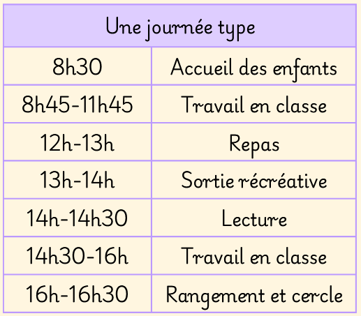

Calendrier et horaires

Le calendrier suit celui de l'académie de Grenoble et les enfants
sont accueills à l'école le lundi, mardi, jeudi et vendredi de 8h30
à 16h30.
Le mardi est dédié à la langue anglaise, tous les apprentissages
sont dispensés en anglais. Le mardi après-midi est réservé au sport
et le vendredi après-midi à une sortie en nature.
Périscolaire
Dans un premier temps et selon la demande, nous proposerons un accueil périscolaire le matin de 8h00 à 8h30 ainsi que le soir de 16h30 à 17h00.